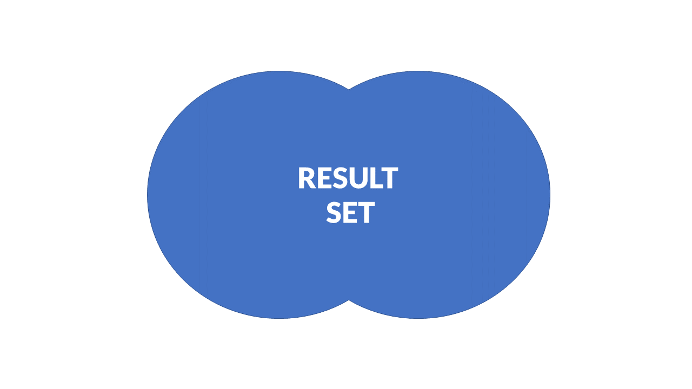
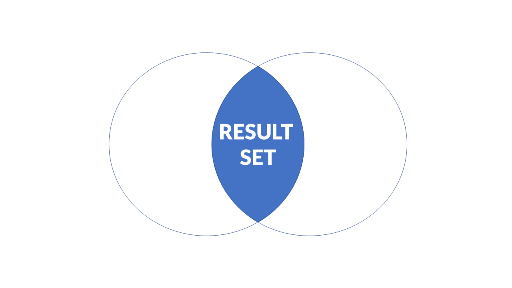
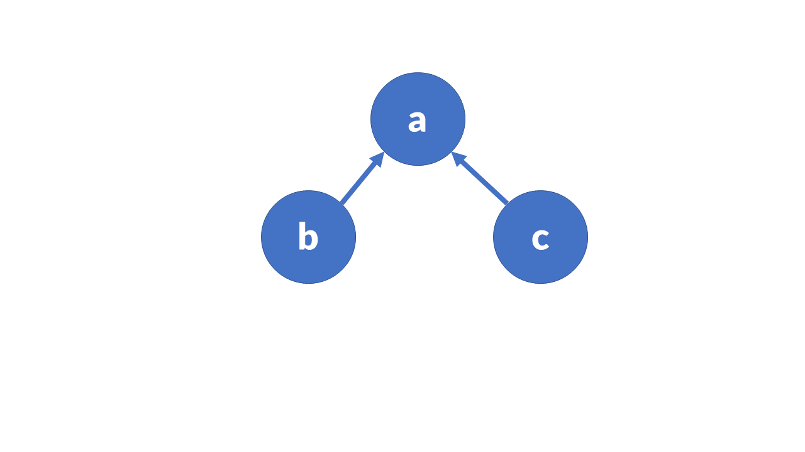
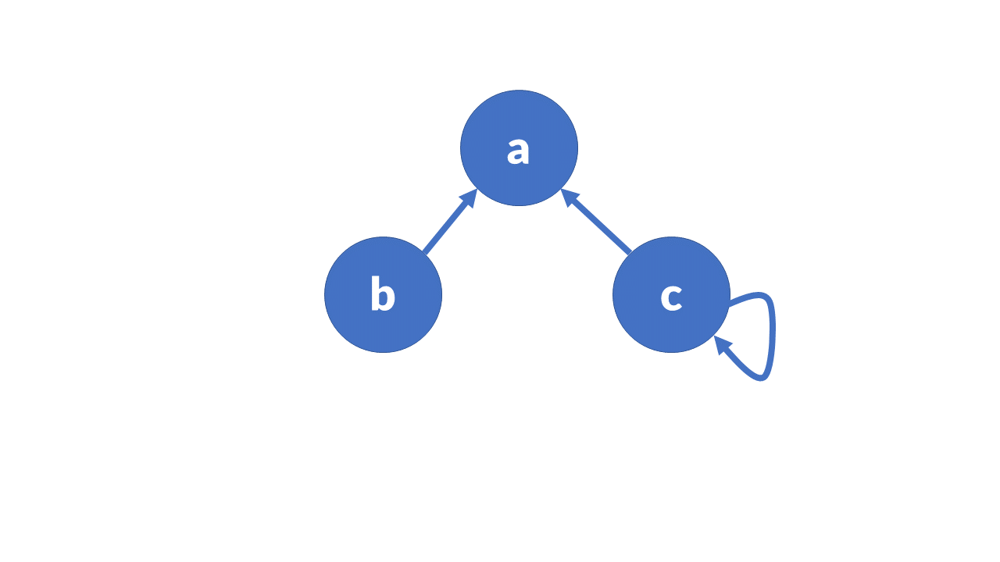

Competency: Mathematical Reasoning of Data
Author: Jack Pope
This course module is about set theory. It embodies categorical classes and sets in terms of relations and functions.
Given that this module is to be worth 1 credit, or 15 hours of coursework, the instructor should prepare three to five subtopic discussions. These should account for at least 5 hours of instructional material and might be in the form of lecture notes or lecture videos. The additional hours should be comprised of student labs or assignments.
Traditionally, a course in Set Theory takes a theoretical approach, on paper. However, the field of Data Science is an empirical endeavor that programmatically emphasizes empirical evidence.
Axioms which we accept as true are what support logical proof. Evidence (data) supports empirical proof, certainty based on a measurement and its statistical significance. A weakness of logical proof occurs when erroneous accepted “facts” support an axiom. A weakness of the empirical proof occurs when the data sample does not represent a population.
To accommodate our purposes, we will use a combination of the programming languages Standard Meta Language (SML) and Structured Query Language (SQLite). To a lesser extent procedural languages are mentioned. SML affords us functional programming and SQL expedites processing larger sets of data in tables. Within the functional paradigm, SML has relatively concise expressions in comparison to procedural languages such as C or Java, better reflecting mathematical expressions.
SML was originally devised by Robin Milner as a computational theorem proving system. Along with SQLite's build-in set operators, we can thoroughly learn set theory using data.
The choice of programming language is ultimately left to the instructor.
| Unit | Topic |
|---|---|
| 1 | Sets – Overview |
| Number types | |
| Set types | |
| Set type examples | |
| Installation of software (SML, SQLite) | |
| Exercise | |
| 2 | Programming |
| Set operations in Standard ML | |
| Exercise | |
| Set operations in SQL (SQLite) | |
| Exercise | |
| 3 | Relation |
| Properties of relations | |
| Domain and range of relations | |
| Relational graphs | |
| Exercise | |
| 4 | Function |
| Properties of functions | |
| Inverse function | |
| Composition of function | |
| Exercise |
A set is an unordered collection of distinct elements. It can be represented by a list, string, array, etc. Formally, set elements are denoted in the form { a, b, c, d }. Because order does not matter, the same set is represented as { c, b, d, a }.
The values represented in sets can be the members of some class, such as number types, animals, automobiles, or some other categorical classification. For example, a line may be drawn that connects infinitely many points, together which comprise a set of points. Such a set could also be represented by an equation.
We say that elements constitute sets, and that sets are comprised of elements. However, sets may be empty or comprised of other sets, subsets.
The character S is typically used as a symbol signifying a set. The symbol is arbitrary. It may be A, B, … So, we can have S = { } or E = { e1, e2, … }, such that e1 is in E.
If s is an element of set S, then we write: s ∈ S.
If t is not an element of set S, then we write: t ∉ S
If S = {2.2, 3.1, 4.5, 5.8},
Then 3.1 1 ∈ S AND 2.5 ∉ S
We can represent sets in tables or with “set builder” notation.
Tabular form, where elements can represent fields and different sets represent records (rows):
A = {1, 2 , 3, 4}
B = {1, 3 , 5, 7}
C = {2, 4 , 6, 8}
Set builder form:
A = { a : p(a) }, where 'a' is an element of set A.
For example, given a set of integers A = { 1, 2, 3, 4 }, we have A = { a : 1 ≤ a < 5 }, where a is an integer that is greater than or equal to 1 and less than 5.
When you see notation for a set S = { s | s ∈ N }, it indicates that s is an element of S and that S is the set of all natural numbers. The colon “:” or the vertical bar “|” stands for “such that” and allows specification of conditions.
The cardinality (cardinal number) of a set is its element count, denoted with |{}|. For example
| {a, b, c, x, y} | = 5
| { 1, 2, 3, 4 } | = 4
Cardinality may be infinite and expressed such as:
| {1, 2, 3, 4, … } | = ∞
Two sets A and B with the same cardinality are denoted as:
|A| = |B|
Two sets A and B with unequal cardinality are denoted such as:
|A| >= |B|
|A| < |B|
Set equivalence:
if |A| >= |B| AND |A| <= |B| THEN |A| == |B|
Universal … U ... all elements and subsets of a particular class. (The alphabet is the universal set of the chars x, a and w.)
Complement … A′ = (U - A), or A′ = { a | a ∉ A } ... the Universal set of elements which are not in a set.
Finite: contains a definite number of elements
Infinite: contains infinite number of elements
Subset ... A ⊆ B ... if every element of A is an element of set B, then A is a subset of B
Proper subset ... A ⊂ B ... a set that is subset of a larger set. Given that every element of A is an element of B and |A| < |B|.
Singleton … unit set {s} ... contains just one element.
Empty or null … ∅ ... contains no elements. The cardinality is zero.
Equal... two sets containing the same elements.
Equivalent … two sets with same cardinality.
Overlapping ... A∩B ≠ ∅ ... two sets with at least one common element.
Disjoint ... A∩B = ∅ ... two sets are disjoint if they have no elements in common.
Pairwise disjoint .. all sets from N sets are disjoint.
Partitions … various sets within a sets; exist between pairwise disjoint sets.
Cartesian (cross) product … A x B … all possible ordered pairs (a, b) where a ∈ A, b ∈ B.
Given the sequence (a, b), all elements of A and all elements of B are paired as (a, b).
A Cartesian Product of more than two sets makes a “tuple” such as (a, b, c).
Union ... A∪B = { a | a∈A OR a∈B } ... elements which are in A, B, or in both A and B.
Intersection ... A∩B = { a | a∈A AND a∈B } ... set of elements which are in both A and B.
Difference … A - B = { a | a∈A AND a∉B } ... set of elements which are in A but not in B.
Power set … P(S) … set of all subsets of S, including the empty set. Its cardinality is 2n.
Partitioned set … a collection of disjoint subsets, P1, P2, … Pn, that satisfy:
Finite set:S = { s | s ∈ N AND 0 < s < 100}
Infinite set:S = { s | s ∈ N AND s > 0}
Subset:A = { 1, 2, 3 }, B = { 1, 2, 3 }, B ⊆ A
Proper subset:A = {1, 2, 3, 4 }, B = {1, 2}, |B| < |A|, B ⊂ A
Empty set:S = { s | s ∈ N AND 0 < s < 1 } = ∅
Unit set:S = { s | s ∈ N, 0 < s < 2 } = { 1 }
Equal set: A = { 2, 4, 6 }, B = { 6, 2, 4 }, |B| == |A|, A = B
Equivalent set:A = { 1, 3, 5, 7 }, B = { 2, 4, 6, 8 }, |B| == |A| == 4 , A == B
Note: While equivalent sets contain the same number of elements, equal sets additionally contain the exact same elements, regardless of order.
Overlapping sets:A = { 1, 2, 3, 4 }, = { 0, 2, 6, 8 }, A∩B = 2
Disjoint sets:A = { 1, 3, 5, 7 }, B = {2, 4, 6, 8 }, A∩B = ∅
Union:A = { 1, 2, 3, 5 }, B = {1, 2, 4, 6 }, A∪B = { 1, 2, 3, 4, 5, 6 }
Intersection:A = { 1, 2, 3, 5 }, B = {1, 2, 4, 6 }, A ∩ B = { 1, 2 }
Difference: A = { 1, 2, 3, 5 }, = {1, 2, 4, 6 }, A - B = { 3, 5 }, B - A = { 4, 6 }
Complement:U = { 1, 2, 3, 4 }, A = { 2, 4 }, A' = { 1, 3 }
Cartesian product:A = { 1, 3 } AND B = { 2, 4 }, AxB = { (1, 2), (1, 4), (3, 2), (3, 4) }
Power set: For S = { 1, 2, 3, 4},
P(S) = {{∅}, {1}, {2}, {3}, {4}, {1, 2}, {1, 3}, {1, 4}, {2, 3}, {2, 4},{3, 4},
{1, 2 , 3}, {1, 2, 4}, {1, 3, 4}, {2, 3, 4}, {1, 2, 3, 4 }}
|P(S)| = 2n = 16
SML features:
Information for the download and install can be found at:
http://www.smlnj.org/dist/working/110.82/index.html
Start SML in interactive mode (Read Eval Print Loop – REPL):
In an editor, write a test program:
(* hello.sml *)
fun helloWorld() =
print "Hello World!\n"
val _ = helloWorld()
To load a .sml program in the REPL, enter:
use hello.sml
To exit, enter Ctrl-d
To run a standalone program:
sml < hello.sml
Or:
sml < hello.sml > output.txt
Windows OS: right-click the program icon for options to run, etc.
For a standalone executable, there are commands to use in the REPL (See http://www.smlnj.org/doc/CM/new.pdf ). However, that way is problematic. You are better off installing MLton ( http://www.mlton.org ).
Then compile as follows:
mlton hello.sml
./test
→ Hello World!
“SQLite is a software library that implements a self-contained, serverless, zero-configuration, transactional SQL database engine. SQLite is the most widely deployed SQL database engine in the world. The source code for SQLite is in the public domain.” – SQLite website
Installation (version 3): http://sqlite.org/download.html
At your command prompt, enter: sqlite. Then enter:
As a stand along program on the command-line in file hello.sql:
Run as:
Or, using a text file:
/* SQLite file IO example */
.mode csv
.separator ,
--.output output.csv -- optional
CREATE TABLE test(a INTEGER, b INTEGER);
.import input.csv test
SELECT a FROM test;This SQLite program would read a text file input.csv consisting of:
1,5
2,6
3,7
4,8
Given the number types N for all natural numbers, Z for all integers, Z+ for all positive integers, Q for all rational numbers, I for all irrational numbers, R for all real numbers, W for all whole numbers, and C for all complex numbers, write simple programs in SML and SQLite to display your understanding of number types.
Given the numbers 1, -5 and 1/5, your program syntax will simply generate the following output string in “ “ quotes:
SML:print “-5 is an element of N: true”;
SML:print “1/5 is an element of W: false”;
SQLite: SELECT “-5 is an element of N: true”;
SQLite: SELECT “1/5 is an element of W: false”;
Besides introducing number types, this exercise provides an introduction to the SML and SQLite programming languages. Therefore, these programs should be installed on your computer (See the Programming unit below.).
If you think these exercises are trite and redundant using the both SML and SQL, you are correct. Apart from ensuring that your installations work, we want to enforce some basic understanding of number types for now.
We can show how different sets of elements have certain relationships in terms of union, intersection and so on. Instead of demonstrating these relationships using pen and paper, we will use SML and SQL to display set elements in these contexts.
Computer programming languages have data types, or categorical sets of data types such as integer, character and real. So, it behooves the budding programmer to understand what kind of data belong to what broader type. This idea is enforced in textbook from section 1.1 through section 1.7.
When we define a collection, we have a set. We can groups these sets into another set. For example, the set automobile is comprised of sets of sedans, trucks, jeeps, suvs, . . . In SML, creating our own type as such looks like:
datatype Automobile = Car | Truck | Jeep;
We assign an element like:
val cj = Jeep;→val cj = Jeep : Automobile
However, to compose distinguishing attributes of a type, we need a feature called a constructor. We define a constructor such as:
datatype Automobile = Transmission * Radio;
Suppose that Transmission might be “standard” or “automatic” and Radio might be AM or FM. The programmer could specify these types by calling the constructor such as:
Automobile(“Standard”, “FM”);
→ val it = Automobile (“Standard”, “FM”) : Automobile
The definition of the constructor could include default values as well, such as:
datatype Automobile = Transmission of { standard : bool } | Radio of { modulation: string, gps : bool };
A union of number types would look like the example on page 40 in the textbook:
datatype num = Int of int | Real of real;
→ datatype num = Int of int | Real of real
This allows for alternative contexts:
Int(5); → val it = Int 5 : num
Real(5.5); → val it = Real 5.5 : num
Set functions in SML
Not all functions that we want are built into a programming language. Programming may be expedited by creating your own functions. For example, we want a function “f(x) = x + 3” that accommodates various inputs for the variable x. The statement “x + 3” is called a “parametized expression.”
Here we look at functions in terms of user defined functions, recursive operations and function defaults or exceptions.
To define a function in SML, use the “fun” keyword:
fun myFunction(x,y) = x + y + 5;
→ val myFunction = fn : int * int -> int
Using this function:
myFunction(5, 8);
→ val it = 18 : integers
The formal parameters above are x and y, with actual parameters of 5 and 8 respectively.
There will be times when a single function should behave differently for certain parameters, much like a switch-statement in Java. In SML this is referred to as “pattern matching,” as the appropriate function signature applies to the user's parameter pattern. For example:
fun f(1) = 0 | f(x) = (x * x - 1) div (x - 1);
→ val f = fn : int -> int
f(2);
→ val it = 3 : int
Notice that a supplied parameter of 1 generated output of 0, and input of 2 yields 3.
Using the same approach we can accommodate a different number and type of parameters. In languages like Java we refer to such accommodation as method overloading. Now the function can deal with various linked contexts among categorical sets.
For example, lets consider an example of a car mileage calculator. The formula here is admittedly erroneous, as it it left to you to “correct” it as as an exercise below. First, define two sets of transmission, automatic and standard:
datatype transmission = automatic | standard;
datatype car = sedan | suv | jeep;
Transmissions have different drag (PSI) on the drive train of a vehicle:
fun getDrag(automatic) = 2.4 | getDrag(standard) = 1.5;
How about car weight (pounds/1000), depending on instance of car:
fun getWeight(sedan) = 2.2 | getWeight(suv) = 2.5 | getWeight(jeep) = 2.1;
And the cylinder count per instance of car:
fun getEngine(sedan) = 4.0 | getEngine(suv) = 6.0 | getEngine(jeep) = 8.0;
Create a function mpg that computes “miles per gallon” for a car:
fun mpg(car, transmission) = 3.0 \* getEngine(car) - getDrag(transmission) -
getWeight(car);
Now use the mpg function:
mpg(jeep, standard);
Often we need to repeat an operation over and over again. Rather than using an iterative loop of some sort, we can define a function with a call to itself. Building on our function pattern (function overloading) discussion above, here is the obligatory recursive factorial function, in ML:
fun factorial(0) = 1 | factorial(n) = n \* factorial(n - 1);
To use the factorial function:
factorial(5);
→ val it = 120 : int
As you can see in the above example, the case where the parameter is 0 yields output of 1. This is known as the “base case” and it provides and end to the recursive operation. Without it, our program would run indefinitely. Indeed, even in non-recursive functions, we should often should incorporate a case whereby the function halts its work based on a certain value. For example, if the user furnishes an unacceptable parameter, such as:
factorial(goat);
→ stdIn:34.11 Error: unbound variable or constructor:goat
The “unbound variable” leads here to a compilation error, not an exception. SML does not know what to do with “goat” and so it emitted the error message. We could get around that message by having the function emit a message “use an integer” when one is not provided. In other words, we have a kind of default output for the function.
Write programs in SML for the following exercises:
In SQL, SET operators are used to combine the same type of data from two or more tables. Although more than one SELECT statement is used, only one result set is returned. According to the formal definition of a “set,” elements are to be unique. This is enforced in SQL using the DISTINCT clause.
These allow us to combine two or more select statements. All have the same precedence.
Set operators treat NULLS as equivalent. Other than UNION ALL, their yielded results are distinct. EXCEPT matches NULLS while its cousin, NOT EXISTS, does not.
Tables resulting from the component select queries must be compatible for the union operation (union compatibility). They must have the same number of columns with comparable data types. In other words, SELECT statements of a UNION must specify equivalent columns from each table and multiple columns must be in the same order.
Ways to get a union from non-compatible tables:
Select the same columns from each table
Use subsets of the existing tables
Add columns using common data types and populate with arbitrary values or NULLs (leave blank) where appropriate.
Syntax:
For example, query customers who reside in the same cities as product suppliers:
The sequential execution of the query means that the SQL interpreter (such as SQL Server) runs the first query, then the second, and finally combines the results of the two queries while discarding duplicates. This contrasts with the apparent parallel operation of a join, where the resulting table is constructed row by row as SQL Server matches rows for the join.
UNION ALL returns the same information and also includes any duplicates.
The INTERSECT operator combines two queries such that values common to both are returned. In other words, we find elements that are in set A that are also in set B.
The output of the above intersection can be achieved using the IN predicate with DISTINCT. You can use NOT IN to simulate EXCEPT and get the difference between sets.
EXCEPT is functionally equivalent to the MINUS operator and the NOT IN operator, but with simpler syntax. The EXCEPT operator returns results that are in the first query and not also in the second. In other words, it is the difference between two sets.
Like UNION, the output of EXCEPT is unique. Unlike UNION, EXCEPT does not ignore NULL values and treats them as matching. Hence our use of IS NOT NULL above.
First generate random sets of data as temporary in-memory tables (there is no need to actually populate a database; see https://sqlite.org/inmemorydb.html ). Based on these virtual sets we will run the our “empirical proofs.”
Here is how to generate three virtual sets in SQLite:
/* each table represents a set of points in an X-Y plane, at the
coordinates (x,y) */
CREATE TEMPORARY TABLE numbers1 (
id INTEGER PRIMARY KEY NOT NULL,
x REAL NOT NULL,
y REAL NOT NULL
);
CREATE TEMPORARY TABLE numbers2 (
id INTEGER PRIMARY KEY NOT NULL,
x REAL NOT NULL,
y REAL NOT NULL
);
CREATE TEMPORARY TABLE numbers3 (
id INTEGER PRIMARY KEY NOT NULL,
x REAL NOT NULL,
y REAL NOT NULL
);
INSERT INTO numbers1
WITH RECURSIVE
tmp( id, x, y) AS (
VALUES(1 , random()%11, random()%11) UNION ALL
SELECT id+1,random()%11,random()%11 FROM tmp WHERE ID\<10)
select * from tmp;
INSERT INTO numbers2
WITH RECURSIVE
tmp( id, x, y) AS (
VALUES(1 , random()%11, random()%11) UNION ALL
SELECT id+1,random()%11,random()%11 FROM tmp WHERE ID\<10)
select * from tmp;
INSERT INTO numbers3
WITH RECURSIVE
tmp( id, x, y) AS (
VALUES(1 , random()%11, random()%11) UNION ALL
SELECT id+1,random()%11,random()%11 FROM tmp WHERE ID\<10)
select * from tmp;
/* verify table contents */
SELECT * FROM numbers1;
SELECT * FROM numbers2;
SELECT * FROM numbers3;Now, run two queries as a UNION of above tables numbers2 and numbers3.
/* setOps.sql */
.read "../randTemp.sql"
SELECT DISTINCT x, y
FROM numbers2
UNION
SELECT DISTINCT x, y
FROM numbers3;
/* This is the equivalent of: */
CREATE TEMPORARY TABLE resultSet1 (
x REAL NOT NULL,
y REAL NOT NULL
);
INSERT INTO resultSet1 (x, y)
SELECT DISTINCT x, y from numbers2;
INSERT INTO resultSet1 (x, y)
SELECT DISTINCT x, y from numbers3;
SELECT DISTINCT x, y FROM resultSet1;
This yields in arbitrary order all numbers in each table that is are not duplicates. If we want to include duplicates, use the UNION ALL clause instead.
Continuing, try the EXCEPT operator for results which are in the first query and not in the second.
SELECT DISTINCT x, y
FROM numbers2
EXCEPT
SELECT DISTINCT x, y
FROM numbers3;
/* This is the equivalent of: */
SELECT DISTINCT n2.x, n2.y
FROM numbers2 n2
WHERE NOT EXISTS (
SELECT n3.x, n3.y
FROM numbers3 n3
WHERE (n2.x = n3.x AND n2.y = n3.y)
OR (n2.x IS NULL AND n2.y IS NULL)
AND (n3.x IS NULL AND n3.y IS NULL)
);
The INTERSECT operator yields results which are common to both queries.
SELECT DISTINCT x, y
FROM numbers2
INTERSECT
SELECT DISTINCT x, y
FROM numbers3; result set
/* This is the equivalent of: */
SELECT DISTINCT x, y
FROM numbers2 n2
WHERE EXISTS (
SELECT DISTINCT n3.x, n3.y
FROM numbers3 n3
WHERE n2.x = n3.x AND n2.y = n3.y
); 
Using SQL, generate three random sets of alphabetical characters (Have 10 random letters in each of three tables.). Using these sets, demonstrate the following set operations: union, intersect, except.
As we see when querying tables in SQL or comparing lists in SML, we can compare elements in a set to other elements in the same set, or those of others sets.
There is a binary relation between sets A and B may be written as R(a,b) or aRb. This relation can be made to depend on certain conditions, such as equivalence, greater than and less than. That means that their order matters. For example, a parent-child pair is only valid for a certain order.
R(parent, child) ≠ R(child, parent)
The pair order matters. The relationship can be said to belong to a set “begets” in that a parent begets a child. The inverse set would be “inherits” since the child inherits from the parent.
R(parent, child) ∈ begets
R(child, parent) ∈ inherits
While for two sets a relation will be pairwise, relations among more sets may be ternary R(a, b, c) or for a greater number of sets R(a, b, …).
A relation between two sets A and B is a subset of the cross product of A and B. That means the cardinality will range from 0 to N x M, where N is the number of elements in set A for each i element, and M is the number of elements in set B for each j element. Indeed, the resulting set of a relation between sets A and B can have many more elements.
For testing the equality of sets A = {1, 3, 5, 7} and B = {1, 3, 5, 7}, we test for equal elements from i to N from each set in tandem to get the subset relation:
R = { (1, 1), (3, 3), (5, 5), (7, 7) }
Note that the relation R is itself a set.
Conversely, given non-equivalent sets A = {1, 3, 5, 7} and B = {1, 3, 4, 6}, the subset of equal pairs is:
R = { (1, 1), (3, 3) }
Given three sets A, B and C, we can use the “composition of relation” of A and C to infer a relationship with B. Given a relation R between A to B and another relation S between B to C, we can say elements of A and C such that a(S o R)c iff there exists some elements for which aRb and bSc.
Empty: the empty set ∅ or E
Full: the set AxB
Inverse: the set R′ ={ (b, a) | ( a, b) ∈ R } … flip all a's and b's
Identity: the set A { (a, a) | a ∈ A }
Reflexive: aRa relation holds for every element of A … ∀a ∈A … ∀a … for all a
Irreflexive: no aRa; relation holds for any element of A … no a∈A
Symmetric: a1Ra2 → a2Ra1 or ∀a1 ∈ A AND ∀a2 ∈ A … all pairs of elements
Anti-Symmetric: a1Ra2 AND a2Ra1 → a = b ∀a1 ∈ A AND ∀a2 ∈ A
Transitive: a1Ra2 AND a2Ra3 → (a1Ra3, ∀a1, a2, a3) ∈ A
Equivalence: reflexive AND symmetric AND transitive
Domain:
Given two sets A and B, the domain Do of their relation R is the set of A's elements that have a relation to elements in set B. This can be written as;
DoR(a, b) = { a | (a, b) ∈ R }
In terms of equal sets A = { 1, 3, 5, 7 } and B = { 1, 3, 5, 7 }:
DoR = { 1, 3, 5, 7 } == A == B
For unequal sets A = { 1, 3, 5, 7 } and B = { 1, 3, 4, 6 }, where aRb is “less than” we have:
R = { (1, 3), (1, 4), (1, 6), (3, 4), (3, 6), (5, 6) }
… and the domain is:
DoR = {1, 3, 5}
Range (image):
RaR(a, b) = {b | (a, b) ∈ A}
For example, for the unequal sets A = {1, 3, 5, 7} and B = {1, 3, 4, 6}, where aRb is “less than” we have R = { (1, 3), (1, 4), (1, 6), (3, 4), (3, 6), (5, 6) }, where the range is:
RaR = { 3, 4, 6 }
Visual visual aids help us represent relations. At first, we might use a table with rows representing the domain and columns representing the range.
Using sets A = {1, 3, 5, 7} and B = {1, 3, 4, 6}, get aRb in the context of “greater than” and show the range and domain. Mark “x” where this condition is satisfied.
B
1 3 4 6
1
A 3 x
5 x x x
7 x x x x
Therefore, the relation set R is comprised of the respective pairs indicated by the “x” in the table:
R = { (3, 1), (5, 1), (7, 1), (7, 3), (7, 4), (7, 6), (5, 3), (5, 4) },
The domain of the relation is the list of unique (no duplicates) “a” elements comprising each pair:
DoR = { 3, 5, 7 }
The range of the relation is the list of unique (no duplicates) “b” elements comprising each pair:
RaR = { 1, 3, 4, 6 }
Instead of using a tables, we can represent relations using graphs. (Conversely, when studying graphs, we may want to construct an adjacency matrix.)
In a graph, a set's elements are each represented by a vertex (or node). An ordered pair entails a directed graph with the edge that connects two vertices indicating the condition of the relationship. As we saw where “x” marked a relationship in the table above, not all vertices may be connected.
Here is a relation between elements a and b. Suppose b derives from a, or that a is greater than b.

Suppose c also derives from a, We then have.

To represent the relation R = { (b, a), (c, a) } of a set S = { a, b, c }
Given an ordered (c, c), we have a self-loop on vertices. If this is the case for all vertices, then the graph is said to be “reflexive.” If node c in the above graph has a self-loop, it it would look like this:

The relation is then R = { (b, a), (c, a), (c, c) }
Example SML:
Given the following lists and function:
val A = [1, 2, 3, 4 ];
val B = [1, 5, 7, 9 ];
fun contains(x, []) = false
| contains(x, y::rest) =
if x = y then true
else contains(x, rest);
contains(5, B);
Given three sets, A = {a, b, c}, B = {1, 2} and C = {a, b, d}, and the two relations R = { (a, 1), (a, 2), (b, 2), (c, 1) } and S = { (1, a), (2, b), (2, d) }, determine the relation S o R.
Given the set A = { 1, 2, 3, 4 } and the relation R = { (1, 2), (2, 3), (3, 4), (2, 1) }, determine the transitive closure of R.
Suppose set B = { 10, 12, 14, 8, 7 } and relation R = { (10, 11), (10, 12), (10, 14), (10, 8), (10, 7), (12, 12), (12, 8), (12, 7), (14, 14), (14, 8), (14, 7), (8, 8), (8, 7), (7, 7) }. Determine if R is:
Suppose that you have two sets A = {a, c, e, g, h, i} and B = {a, c, d, f, i, k}. Use SML for the following:
Matrix traversal may not seem intuitive to you using Standard ML. Solutions may seem easier in an imperative language such as C++ or Java, or in SQL.
For example, given the set A={1, 2, 3, 4}, demonstrate that the relation is R = { (1, 2), (2, 1), (3, 2), (2, 3) } is symmetric. Your program should display:
Relation R= { (1, 2), (2, 1), (3, 2), (2, 3) } is symmetric for set A = { 1, 2, 3, 4 }
As defined, a function f is from a set X to a set Y is a relation from X to Y such that each x ∈ X is related to exactly one y ∈ Y.
X is called the domain and Y is the codomain.
A function is also called a mapping.
The range may be equivalent to the codomain, or the range can be a subset of the codomain if not all elements of the domain are mapped to the codomain.
The function may be denoted as
f(x) = y
A set can consist of functions as they are evaluated. Consider a line in an XY plane, where one x corresponds to only one y. Accordingly, we can use a programming language like SML to pass functions to other functions, store functions in variables and return them from other functions. This is because functions in SML are what are known as “first class values.”
A function may be considered a relation or an element mapping from domain to range.
Functions map set elements to a set that is related.
f: A → B, where A is the domain of f and B is the codomain.
Range versus image:
Image is synonymous for range, the output of function. So, if we have:
f : R → R
with f(x) = x2
The codomain represents the possible output of a function. The codomain is real numbers (-∞, ∞) and the range is [0, ∞), the real numbers >= 0.
In effect,
f : R → R
... can be defined with a codomain as:
f : R → [0, ∞)
Surjective (onto): When the range and the codomain are the same.
Inverse image (pre-image): Given a subset S of a function's codomain, the inverse image is the set of all elements of the domain that map to the members of S. As defined for a set S with f:X→Y, the inverse image is:
S' = { x ∈ X : f(x) ∈ S }
Certain elements of S will map to the image. Those that do are identified as the inverse image.
Every function has a domain and range.
Domain: set of values of the variable for which the function is defined.
Range: set of values of the codomain for which there is some minimum to maximum application of the function.
The interval of a range from its minimum to its maximum is denoted like [5, 20] for values and (a1, a2) for variables. A range of all real numbers is denoted as (-∞, ∞)
Discontinuities: when the range has more than one interval, given that a function is not defined for all values of the variable. Discontinuity can be quickly verified with this on-line calculator: https://www.wolframalpha.com/calculators/discontinuity-calculator/
Injective (one-to-one): A function that maps from exactly one element of the domain to exactly one element of the range. The range element is mapped to by no more than one domain element.
f(x) = x + 1 is one-to-one
Surjective (onto): a function f from set A to set B is onto if for every element 'b' there is at least one element 'a' such that f(a) = b
Example: all the elements of the range set are applied by all the elements of the domain set.
f(x) = x + 1 is onto because the range is infinite (-∞, ∞).
f(x) = x2 is not onto because the range ignores negative values.
Onto may also be many-to-one: A function that maps from many elements of A to one element “b.”
f(x) = x2 is many-to-one because, for both x = -2 and x = 2, f(x) is 4
A function is surjective onto if the image of f is equivalent to its range. That is:
for every b ∈ B there is some a ∈ A such that f(a) = b
For example:
f:N→N, f(x) = x + 1 is not surjective.
The function maps elements from the set of natural numbers to the set a set of natural numbers, yet it excludes 1.
f:N→ [1, ∞), f(x) = 2x is surjective.
The function maps elements from the set of natural numbers to the set of non-negative even numbers.
f:R→R, f(x) = x2 is not surjective.
The function cannot represent a real number with a square that is negative, as it does not exist.
f:N→ N, f(x) = 2x is not surjective.
The function only maps the set of natural numbers to a set of non-negative even numbers. It excludes odd numbers.
Bijective (one-to-one correspondence; both injective and surjective): iff every possible image is mapped to by exactly one argument. (Each element in the domain maps to exactly one element in the range, and each element in the range is mapped to by only one element in the domain.)
A function is bijective iff it is both injective and surjective.
You may have functions that are:
A function if:A→B is invertible if its inverse g:B→A exists. That is:
f(a) = b ↔ g(b) = a
For example:
For f:Z→Z, f(a) = a + 5
The inverse is g(a) = a - 5, therefore function f is invertible.
Conversely, a function f(a) = a2 is not invertible because (-a)2 = a2 which is not one-to-one like the first.
Two elements in the domain map to one element in the range. Such a function is not invertible. The inverse function requires one-to-one correspondence.
Try not to confuse an inverse function with an inverse image of a function, which is a subset of the domain as applied to a subset of the codomain.
A function can map two sets via a middle third set. Consider the output of function f that must go through function g, such as g(f(a)).
Also consider SML's composition operator “o” that is somewhat like a Unix “|” pipe.
Two functions f:A→B and g:B→C can be composed to give a function from A to C such that (gof)(a) = g(f(a)). This is composition and is called gof.
Composition properties:
For example:
Given f(a) = a + 2 and g(a) = 2a + 1, then (fog)(a) and (gof)(a) are:
(fog)(a) = f(g(a)) = f(2a + 1) = 2a + 1 + 2 = 2a + 3
(gof)(a) = g(f(a)) = g(a + 2) = 2(a + 2) + 1 = 2a + 5
Therefore, (fog)(a) ≠ (gof)(a)